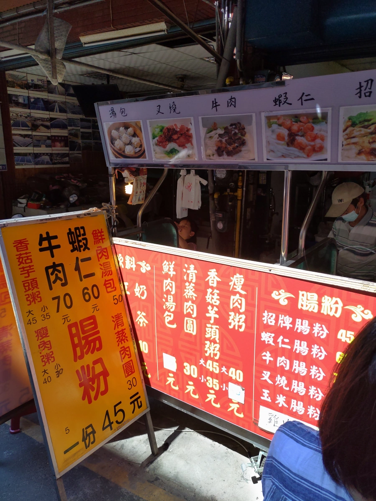
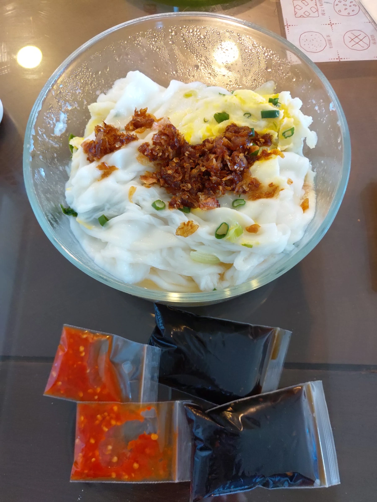
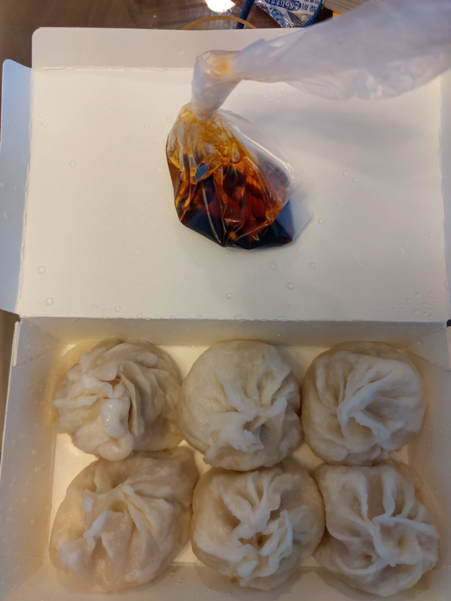
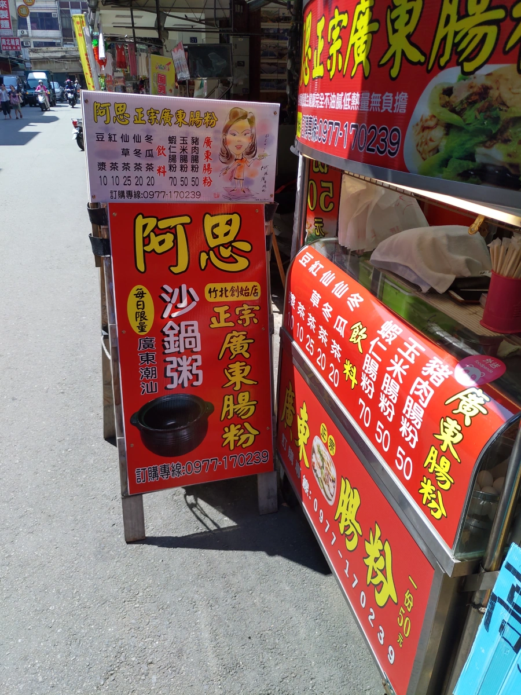
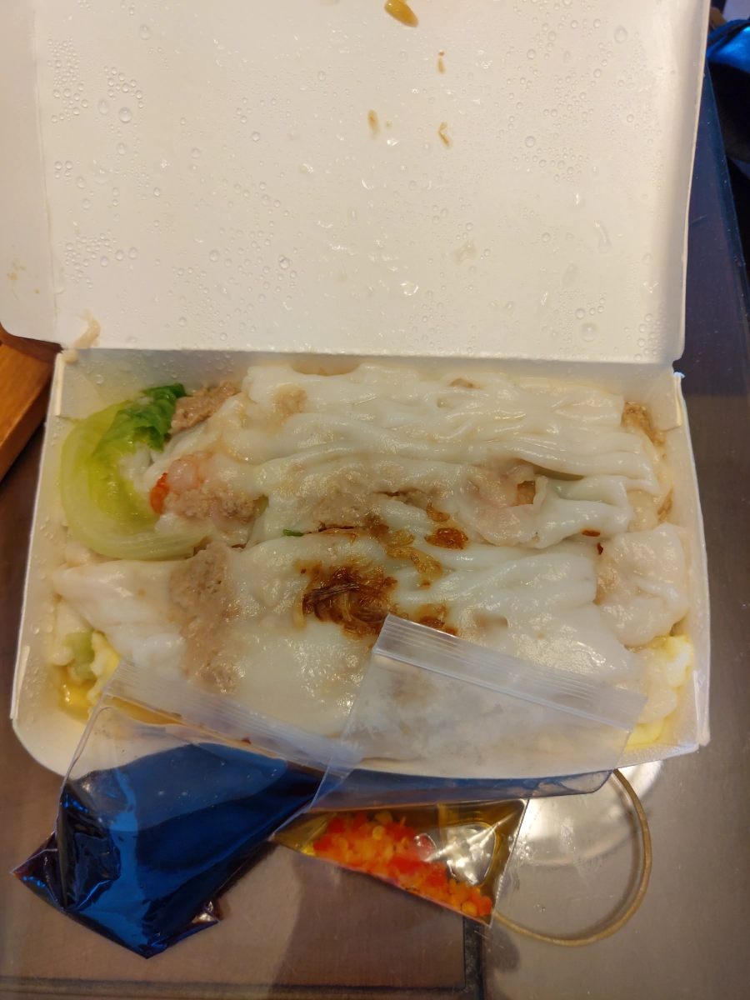

[竹北][竹仁市場 3] 兩家腸粉PK
這是竹仁市場系列第三發 - 廣東腸粉。
今天看到了竹仁市場一家腸粉的簡單食記，本來只是想買個腸粉當早餐，就找過來了，姑且叫它 “無名廣東腸粉”。
但是這家廣東腸粉的隔壁，竟然也是一家腸粉，這家有招牌了，叫 “阿思正宗廣東腸粉”，Google 很少人評價，所以很高分，不過少人評價的高分不準。
因為停車困難，不是常跑竹仁市場，就決定第二家也買一份，來 PK 一下。先介紹第一家 -
| 餐廳名稱: | 無名廣東腸粉 |
|---|---|
| 地 址: | 大概是 新竹縣竹北市竹仁街29號 |
| 營業時間: | 大概跟 竹仁市場 一樣吧。 |
廚師是照片右邊那位戴口罩的男士，感覺是女兒在幫忙招呼客人，幫忙打包、找錢等。 
買了兩份腸粉，蝦仁腸粉 與 招牌腸粉。招牌腸粉只有絞肉、蛋、青菜而已，蝦仁腸粉其實就是招牌腸粉製作過程中加上蝦仁。 
鮮肉湯包剩六顆，店家拜託女王買，也有算便宜一點，就買了。 回到家一吃，是厚皮小籠包啊，湯包通常是不容易破的薄皮。 湯汁早就被厚皮吸光了，或是本來就沒湯。口味平凡，清淡，要沾醬才會比較好吃。 
介紹第二家 -
| 餐廳名稱: | 阿思正宗廣東腸粉 |
|---|---|
| 地 址: | 新竹縣竹北市竹仁街31號 |
| 營業時間: | 大概跟 竹仁市場 一樣吧。 |
| 電話: | 0977 170 239 |
廚師是一位太太，感覺是夫婦在經營，先生似乎忙備料，完全沒接觸客人，都是老闆娘製作、打包、找錢等。 
外帶一份蝦仁腸粉。 
弄個分隔線 ……
兩家非常非常像，這是 低價腸粉，沒在給你捲得漂漂亮亮的，一份腸粉用兩層蒸籠抽屜。 以蝦仁腸粉為例，一層蒸籠抽屜倒入一瓢米漿，打個蛋，加 鹹香豬絞肉，加點蔥、青菜。 另一層蒸籠抽屜 則是 倒入一瓢米漿米漿 加蝦仁。 因為米漿薄薄一層，所也不用蒸太久，大概 2、30 秒，就拿出來了，米漿部分都已凝結，應該有熟吧。 然後用大片刮刀，亂七八糟地刮下來，兩家手法都一樣。
甜醬油醬汁是腸粉的靈魂，兩家每一份都給一大包醬汁。兩家也都宣稱辣椒是自己做的，加了更好吃。 兩層腸粉加上輔料，份量蠻大的，塞滿一個小便當盒。兩家份量也差不多大。真懷疑是不是同一個師父啊。 兩家都沒有 Facebook 粉絲頁。
回到家，其實早就飽了。特別準備好兩邊醬汁，兩邊各吃一口， 艾呀呀… 無法分出高下，蝦仁好像也差不多大小，腸粉粉皮沒味道，本來就要靠醬汁，兩邊甜醬油醬汁味道也很像。 好吧，這世界就是這樣，總有無法分辨的時候。
反正都是便宜粗糙的腸粉，吃到肚子也是混成一堆，不用捲得漂漂亮亮也無所謂。 口味還不錯，摩托車騎士可買來當早餐，順道經過的，買一份嚐嚐也OK。